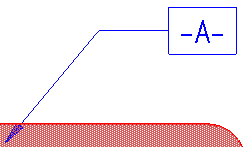

Datum Frame command
Places a datum frame on model elements.
-
Lines
-
Arcs
-
Circles
-
Ellipses
-
Curves
-
In free space
Datum frames are referenced by feature control frames, to convey the acceptable tolerance for a feature. Datum frames are typically placed on features that have uniform faces, such as planar or cylindrical faces.

Changing the appearance of datum frame annotations
You can change the label shape (rectangular or circular) on the Datum Frame command bar. You can add or remove dashes around the label text, and change the terminator type in the Datum Frame Properties dialog box.
Using auto-naming to generate labels
You can create datum frame labels manually, or you can generate datum frame labels automatically. Automatically named datum frames ensure that label names are consistent when you place many datum frames on your drawings.
When you place an automatically named datum frame, you can use the  Auto-Name option on the Datum Frame command bar to turn automatic naming on and off.
When turned off, you can use the Text box on the command bar to modify the label text.
Auto-Name option on the Datum Frame command bar to turn automatic naming on and off.
When turned off, you can use the Text box on the command bar to modify the label text.
Specifying label names manually
You can define datum frame labels manually using the Text box on the command bar.
To produce a datum frame with this subscript:

Type this in the Text box on the command bar: A%{/ST^1}.
To learn about this and other formatting options, see Format codes to modify property text output.
Specifying datum frame label names for auto-naming
You can specify the label naming convention for datum frame labels when you do both of the following:
-
You select the Follow defined object sequence option on the Annotation tab (Solid Edge Options dialog box).
-
You define the datum frame label naming convention that you want to use in the Specify Annotation Letters dialog box.
You can specify that all datum frames use the auto-naming format A1, A2, A3, ..., and B1, B2, B3... by doing the following in the Specify Annotation Letters dialog box:
-
Type the letters AB in the List 4 box.
-
Verify that the Number (1, 2, 3, ...) option alongside the List 4 box is selected.
-
Select the Append as subscript check box.
-
Assign List 4 to the Datum frame list, under Annotation sequence.
To learn more about how to use this dialog box, see Define annotation labels.
Aligning annotation terminators with dimension lines
You can drag the terminator of a datum frame or feature control frame (1), so that it snaps to the dimension line it references (2).

How do I
Place a feature control frame or datum frameDefine feature control frame content
Example: Add symbols to a feature control frame
Save a feature control frame
Activate a saved feature control frame
Place a datum target
Learn more
Geometric tolerancingLook up more details
Manipulating feature control framesFeature Control Frame command
Feature Control Frame command bar
Feature Control Frame Properties dialog box
General tab (Feature Control Frame Properties dialog box)
Datum Frame command bar
Datum Frame Properties dialog box
General tab (Datum Frame Properties dialog box)
Datum Target command
Datum Target command bar
Datum Target Properties dialog box
General tab (Datum Target Properties dialog box)